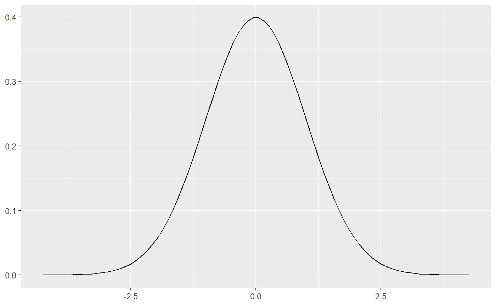
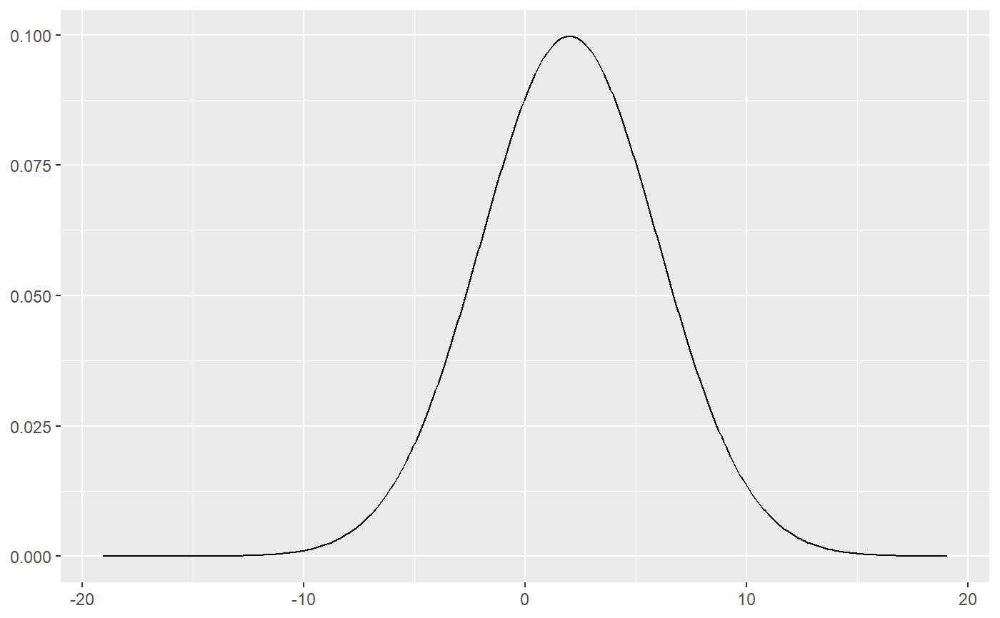
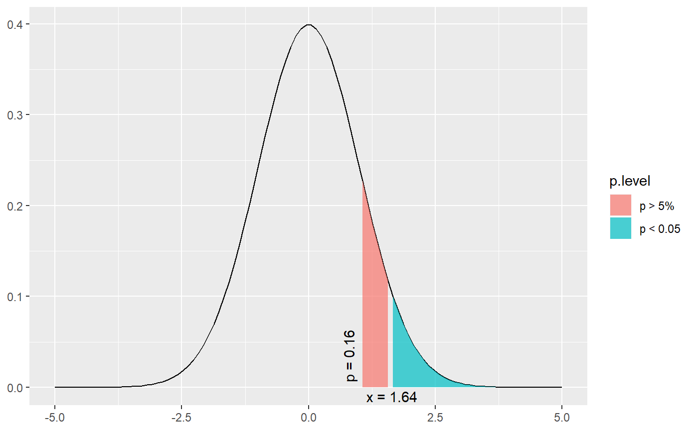

This function plots a simple normal distribution or a normal distribution with shaded areas that indicate at which value a significant p-level is reached.
dist_norm(norm = NULL, mean = 0, sd = 1, p = NULL, xmax = NULL, geom.colors = NULL, geom.alpha = 0.7)
Arguments
| norm | Numeric, optional. If specified, a normal distribution with |
|---|---|
| mean | Numeric. Mean value for normal distribution. By default 0. |
| sd | Numeric. Standard deviation for normal distribution. By default 1. |
| p | Numeric, optional. If specified, a normal distribution with |
| xmax | Numeric, optional. Specifies the maximum x-axis-value. If not specified, the x-axis ranges to a value where a p-level of 0.00001 is reached. |
| geom.colors | user defined color for geoms. See 'Details' in |
| geom.alpha | Specifies the alpha-level of the shaded area. Default is 0.7, range between 0 to 1. |
Examples
# a simple normal distribution dist_norm()# a simple normal distribution with different mean and sd. # note that curve looks similar to above plot, but axis range # has changed. dist_norm(mean = 2, sd = 4)# a simple normal distribution dist_norm(norm = 1)# a simple normal distribution dist_norm(p = 0.2)